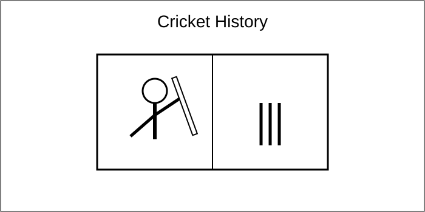

01 / THE STORY
A game passed
through generations.

From local fields to global grounds.
Cricket developed in England and grew through clubs, schools, and international competition. Its appeal lies in a balance of individual skill and team strategy.
The game spread across countries including India, Australia, South Africa, and Pakistan. Each cricket community brought its own traditions and style.
Different formats offer different experiences: the patience of Test cricket, the rhythm of one-day matches, and the speed of Twenty20.
One sport. Three rhythms.
| Format | Innings per team | Typical limit | What to watch |
|---|---|---|---|
| Test | Two | Up to five days | Patience and changing conditions |
| One Day International | One | 50 overs per team | Pacing an innings |
| Twenty20 | One | 20 overs per team | Fast decisions and attacking play |